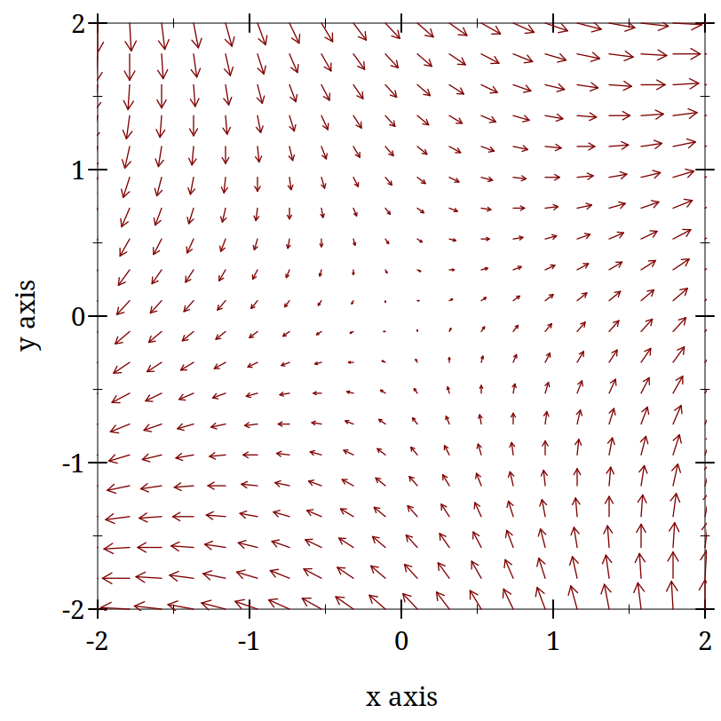
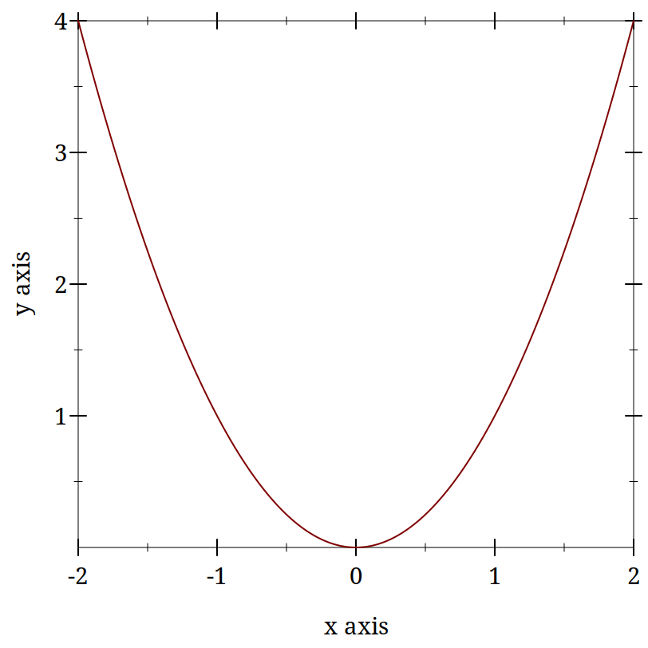

A Digression Into Dynamics
Example:
| > (define (dx/dt=x-x^3 x y) | | (vector (- x (expt x 3.0)) 0)) |
|
A Vector Field:
| (plot (vector-field (λ (x y) (vector (+ x y) (- x y))) -2 2 -2 2)) |
 |
Stability From Vector Fields:
| (begin | | (define (dx/dt=x-x^3 x y) (vector (- x (expt x 3.0)) 0)) | | (plot (vector-field dx/dt=x-x^3 -0.2 0.2 -0.2 0.2))) |
|

|
Example:
| (list (plot (function sqr -2 2)) | | (plot (function (lambda (x) (- (sqr x))) -2 2))) |
|
'( ) |
Example:
| (begin | | (define (hopf-fixed-example l) (list (list l (- (sqrt (* -1 l)))) (list l (sqrt (* -1 l))))) | | (define (hopf-fixed-example-deriv x) (* 2 x)) | | (define ls-to-plot (range -5 -0.05 0.05)) | | (define fixed-points (append* (map hopf-fixed-example ls-to-plot))) | | (define-values (r g) (partition (lambda (x) (positive? (hopf-fixed-example-deriv (second x)))) fixed-points)) | | (plot (list | | (point-label (vector 0 0) "bifurcation point" #:anchor 'right)(points r #:color "red" #:label "unstable") | | (points g #:color "green" #:label "stable")) #:x-label "lambda" #:y-label "fixed-points")) |
|
|
Examples:
| > (require "../code/morris-lecar.rkt") |
| > (require plot) |
| > (list (try-a-new-phi 0.03) | | (poor-mans-phase-plot 0.03)) |
|
'( ) |